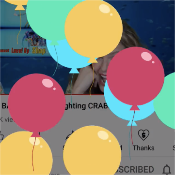

With the development of the Internet,
Short Video culture has gradually penetrated
into people's lives.In recent years, Tiktok, Kuaishou and such
similar emerging apps have gradually occupied most of the
market. Meanwhile, live culture is also rising, you must be
familiar with this sentence: thank for the rockets or sports
cars. This kind of donate culture is becoming popular around the
world. As the elder statesman of video streaming, Youtube has
also jumped into the new business of live-streaming tips to
encourage its creators to produce better content. In the
early years, some youtubers traditionally made money from the
video view, the placement of ads in their videos, and the
promotion of products. But in recent years, To attract and
encourage creators to produce better content, Youtube has
started to offer new rewards. Started rolling out a lot of paid
features like
super thanks,super chats. super stickers, and VIP
Subscribe.
Reward Mechanism
VIP Subscribe
。The YouTuber will receive a certain amount of money each month
。It will also increase the distance between the YouTuber and his followers
。Click here to watch the tutorial to subscribe